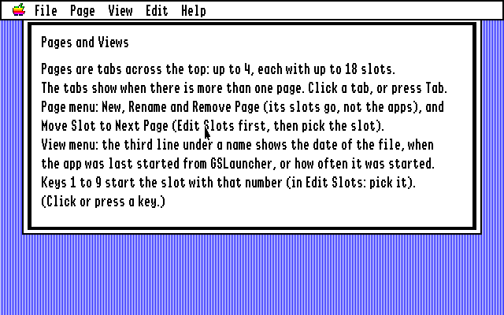

Chapter 1
Getting Started
What you need
- An Apple IIgs
- System 6 (GS/OS) on a startup disk: a 3.5-inch disk or a hard disk
GSLauncher also runs in an Apple IIgs emulator such as MAME. Everything in this guide works the same there.
Getting the program disk
GSLauncher comes as GSLauncher.po, an image of an 800K 3.5-inch disk. Download it from the GSLauncher homepage. To use it on a real Apple IIgs, write it to a 3.5-inch disk with a disk-copying program. In an emulator, put the image in the emulator’s 3.5-inch drive.
The disk holds three things: the program GSLauncher, a ReadMe file with a short summary of this guide, and an Icons folder, which gives the program its icon in the Finder.
Putting GSLauncher on your startup disk
GSLauncher is most useful on the disk you start your computer from.
- Start your Apple IIgs with System 6.
- In the Finder, make a new folder on your startup disk and name it GSLauncher.
- Drag the GSLauncher program and the Icons folder from the program disk into the new folder.
Starting GSLauncher
- In the Finder, open the GSLauncher folder.
- Double-click the GSLauncher icon.
To have GSLauncher start by itself whenever you switch the computer on, see Chapter 7.
The first start
The first time you start GSLauncher it has no programs yet, so it offers to look for them. The Find Apps window opens and lists your disks.

- Click Scan (or press Return) to look on your startup disk.
- When the list of programs appears, click the check box of each one you want.
- Click Add Selected.
The programs you checked appear in GSLauncher’s window. Chapter 3 tells you all about Find Apps. If you would rather add your programs one at a time, click Cancel and see Chapter 4.
The GSLauncher window
Across the top of the screen is the menu bar, with the Apple, File, Page, View, Edit and Help menus. Below it is GSLauncher’s window. Each program in it has a slot:
- The program’s icon, the same one the Finder shows for it
- Its name
- A third line: the date and time the program’s file was last changed. You can have it show other things instead (Chapter 6).
- A small number at the top left of the first nine slots: the key that starts the program
The window holds five slots in a row and grows downward as you add more. You can drag it by its title bar.
Getting help
The Help menu explains GSLauncher a page at a time: Starting Apps, Editing the Slots, The Menu Entries, The Slots File, Finding Apps, and Pages and Views. Choose one to read it. Click the mouse or press any key to put it away.

Choose About GSLauncher from the Apple menu to see the version and the day it was built.
Quitting
Choose Quit to Finder from the File menu (Apple-Q). The Finder starts.